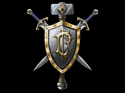
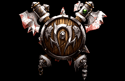
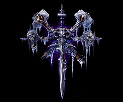
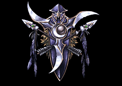

The 2003 expansion to Reign of Chaos. New heroes, new campaigns and a story that follows the fall of Arthas.
Choose your race
Knights, archmages and strong defenses. A good pick if you like to build up and push out.

Strong melee units and big hits. The Horde wants to fight early and often.

Necromancers and skeletons, plus the Lich King's frozen power behind them.

Archers, druids and ancient trees that can walk and fight when you need them.
Blizzard Entertainment released the expansion in 2003. It added new heroes, new units and new buildings, and it came with four campaigns that continue the story from Reign of Chaos.
Back to the races"Lok'tar ogar!"
Orcish battle cry, "Victory or death!"